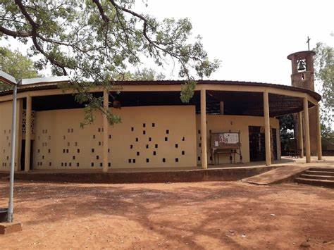

Burkina Faso(Banfora)
Accueil
Patrimoine
Hotel
Galérie
La Cathédrale Saint Pierre de Banfora

La cathédrale Saint-Pierre à Banfora, est la cathédrale du Diocèse de Banfora. Le catholicisme est la religion des chrétiens en communion avec le pape et les évêques.